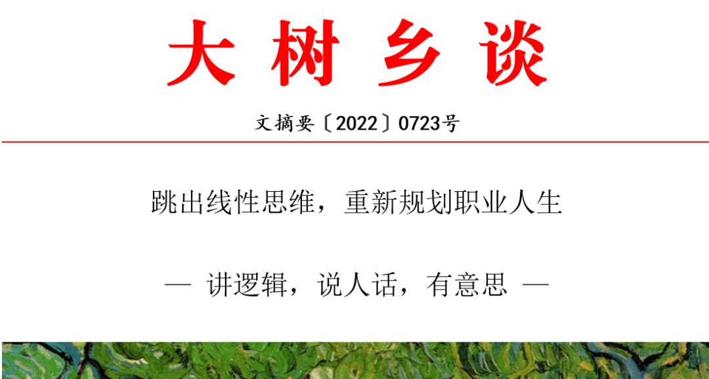

谈谈职业发展：人生处处可选择

- 1 -
周末了聊聊天，谈谈人生和职业发展。中国人进入现代社会其实并不久，也就是上世纪八九十年代开始，才逐步适应工业化城市以及陌生人社会，至于告别被人安排那就更短了，就算到现在，仍然有很多地区仍然延续过去传统的社会形态和生活方式。这并不是说一个好一个不好，陌生人社会可以更加自由的享受自己的生活，但也没了熟人社会的温情和安全感，有利有弊。但随着人口、产业越来越向大城市聚集，至少在未来相当长时间里，年轻人们还是要习惯陌生人社会，这就带来了两个关键的迷茫点。
一是社交恐慌。社会运转速度迅速加快，认识陌生人成了关键能力，对认识人、结交人的需求极为迫切，如果觉得自己不会社交、朋友少，就会极为恐慌，由此又出现了一系列的误区。二是线性的职业发展规划。这两个都可以理解，毕竟中国进入市场经济以前，职业、工作基本是延续过去，所谓“子承父业”，这是非常确定性的，过去哪怕出生在北京的，从小熟悉的还是亲戚、朋友、同事，打小就没接受过怎么跟陌生人打交道，这些课程都是缺失的，需要在工业化进程中慢慢补足。
但显然，中国发展太快，地区差异更大，根本等不及，也就出现了很多的慌乱。
- 2 -
先说第一个社交恐慌。有很多朋友都留言，问怎么去结识人、怎么搞人脉，总结下来其实就是怎么让别人成为自己的助力，也有人问小镇平时工作还要日更，还有时间去社交吗？小镇现在已经在做减法了，除了极特别的情况，会参加人数比较多的聚会，否则一般是6人以内或者4人以内，现在微信等工具这么发达，维持彼此的关系没必要这么麻烦。但社交的方式就比较多样了，可以是一起射箭跑步等运动，也可以是周末出去转转，又或者有共同的话题一起坐坐聊聊行业发展、对未来的想法等等，有时候喝茶比喝酒更清醒更适合谈事情，不再像年轻的时候对社交非常依赖，甚至在一场场酒局中寻找自己存在的意义。
社交其实是可以很简单的，没必要为了追求人群中的热闹而忽视了最需要巩固的关系，更没必要把是否喝酒作为社交的标志。但这也并不是如一些人说的“只要自己强，别人来找自己”，这太过功利，何况一个人无论多强一定还有更强的，难不成就一直闷着头做自己的事？社会毕竟是人的集合，脱离群体的个体终究更脆弱。还是要把握一个度，既要适度精简做好自己的事情，也要维护好社交网络，既要有关系密切的，也要有弱关系和泛关系，但有一点非常重要，别把平台和职位赋予的当成自己的。生活中经常看到，有的人以认识某人或者有谁的联系方式就觉得是自己的人脉了，到处宣扬，又或者因为所在的位子就觉得自己无所不能，但世事很奇妙，有时候一夜之间泡沫就碎了。
比如说有的公务员仗着自己有个一官半职就对企业和老百姓很不尊重，觉得自己有个官身尾巴就翘到天上去，又或者以为自己平时往来无白丁就觉得自己已经超脱凡俗。现在已经在向陌生人社会过渡，不再像熟人社会那样知根知底，所以人人习惯与人为善、你好我好，轻易不得罪别人，但是真要把人逼急了，仗着身份得到的也很容易失去。方法很简单，可能是一个举报信、堵单位门，高级点的可以是一次座谈会上几句话，又或者人多口杂的风闻。自以为强大的人脉，或许也仅仅是无所求时彼此的恭维，真要有什么难事，自己心里要有数。
公务员如此，企业更如此，尤其某些中高层领导者，平时拿着几十万百来万的薪酬，手里拿着几千万的事权，拿着公司的纳税和投资，也颇能与市长县长们觥筹交错。但很可能一夜之间，公司就把人裁了，作为中高层管理者还不敢像普通劳动者那样同公司闹翻，毕竟圈子太小还得考虑自己的口碑，公司如果较真严格审计，甚至搞莫须有，不免吃不了兜着走。经历越多越明白，自己的地位仅仅取决于自己的稀缺性和性价比，职业、位子、权力仅仅影响手里的资源，但不是决定性的。这个资源不仅仅是金钱的、权力的，也可以是情感的、学识的、血缘的。搞清楚这一点，才能想清楚到底应该怎么破解社交恐慌。
- 3 -
第二个：线性的职业发展规划。很多人认为的职业发展，就像是玩游戏一样，好好工作、完成任务、拿到好的结果，从科员到科长、处长甚至搏一搏厅长，又或者从普通职员到主管、经理、总监甚至VP高管，就算在大学校园，也要努努力提高职称，不论是高级教师又或者教授。总之大体是线性的，而且是单一线性的。这倒也没错，毕竟主流就是这样的，也是最多数人遵循的，通过这个路径成功的也是最多的。但这条主道太多人走了，所以各种套路特别多，竞争也极为激烈。
最直白的，怎么证明自己就比别人强，就能够在线性的竞争中压别人一头？还是拿小镇自己举例吧。小镇一开始在某市某系统工作，连续几年招聘年轻人颇多，但是位子就那些，很多人的规划也就是实职副科或者虚职正科。为了增大自己的可能性，很多人是非常拼的，拼关系、拼人脉、拼工作、拼运气。有的主动把信息工作担了，到处找大学同学在各种媒体发豆腐块文章，完成考核任务；有的拼命加班，全年无休；还有的把迎接考核的卷宗玩出了花，这也包括小镇。至于其他路子就不多说了，反正人多机会少，可想而知。
最终上面这些非常拼的人多数并没有改变，仍然和以前的人一样，慢慢的磨着、等着。小镇运气好，跳出来了，轻易获得了很多人拼一辈子都拿不到的，至于在这个过程学习到、接触到的更是无法相提并论，这才是一生的财富（《在中央国家机关工作的最大收获》）。新的岗位非常容易让人迷失，虽然小镇仍然坚持父母的教诲，低调做事，家乡的驻京办都不知道还有小镇这么个人，老乡会更是从来不去，直到去年才偶然因为某事知道还有小镇这么一个人。但平时做的事、接触的人很难不让人自大，到哪都被人尊重，虽然一再提醒自己这不过是平台光环，换个人也一样。
但内心还是不服气，觉得自己能力很强又肯干能卷，一周能在办公室睡3天，周末春节还加班，一个人能顶5个人甚至10个人，工作也确实有些贡献，浑然忘了这一切的源头很大程度是运气，换个人其实也差不多。心态就有点飘飘然了，有时候和同事闲聊，都觉得部级不敢想、正厅实职一把两说，但50来岁正厅虚职几乎是铁板钉钉的事。有了这个想法就有些失衡了，就想着这个荣誉想拿、这个优秀想要，颇有种时不我待、打怪升级凑积分的感觉。也确实，组织上给了一些荣誉，但事后想想，体制内所谓的荣誉本就没用，真正有用的只有晋升，这些优秀和荣誉更大意义是安抚人，抢来了又有什么用，反而坏了自己的形象，又让领导觉得已经给补偿了。
公司里其实也一样，小镇对互联网公司比较熟，季度、年度往往有考核，什么3.75、四星、B+等等杂七杂八的所谓优秀考评，也会因此调薪，但是相比晋升、给更大权限，这又算什么呢？很大程度上，这些所谓的优秀不过是安抚，设置一批标兵鼓励继续努力或者卷下去，拿到以后好意思第二年不更加努力吗？年年加码，又能努力几年。
- 4 -
思来想去，想要破局起码有三条，核心都是要破解积分兑奖思想。第一条路：学会聚力爆发乏善可陈、没有亮点的时候，适当藏拙，不要啥时候都想着拼尽全力，人的精力、智力、拼劲都是有限的，平常年份拼没了关键时刻怎么办，与其搞平均主义，不如做好积累，包括工作的成果、贡献、成绩等等，集中在关键的一年爆发出来。体制内各有特点就不多说了，公司的话最好就是进入新公司或者新职级的第2、3年，拿就拿最优秀的那个等级，或者就干老板最关注、最重视的。
就算最终没有拿到最高的考评、最后没有达成完美的结果，只要让关键人记住，那就值了，普通的优秀只能让自己的上一级看到，但上一级没有能力给真正的回报。第二条路：做一条跳出水面、短暂滑翔的飞鱼比如体制内，还是要讲资历，按顺序晋升，前面的人不动，后面的人就得等着，还得小心突然有人空降。有的中央单位，厅局级岗位集中退休处长不够填位子了，结果还压了好多正科，有的正科都8年了，公务员的晋升就是这么不讲道理。有的人就看明白了，不再想走线性，直接做工作去援藏，然后再想办法落实一期升半级的政策，级别够了再回来，类似的还有一些。
体制内的晋升往往就那几个关键卡点，一旦提前1、2年，后面可能就是连续的“绿波”。体制外公司也有类似的机遇，就不一一详述了。第三条路：多线发展，打造第二增长曲线。这一条是小镇这几年琢磨出来的，时代已经变了，《百岁人生》告诉我们，现代人的职业生涯要远超过去，工作时间不再是过去的30年而可能是40年、50、60年年，就不能再按照过去一个职业线性发展的老路，绝大多数人都走的路注定了内卷极为严重，等自己年纪大了、身体弱了、思维开始僵化了，又怎么跟年轻人去拼？
互联网常说的“35岁危机”，其实主要指的程序员，中国互联网目前还是比较初级的，实际没太多高深的技术，往往是实现初级的数字化后就能够迅速获得垄断优势，获取巨额利润，经历拼命寻找更多增长之后，紧接着进入维持阶段、战投阶段。比如字节跳动，现在诺大的家业，天天说算法高深，但本质上就是通过海量用户产生的巨大数据，让智能自我学习，从而形成一个个让人沉浸的小信息环境。字节起家的头条、崛起的抖音都是在吃这个技术，当然后面也会有持续的优化，从95%优化到98%虽然技术难度肯定更大了，但并没有本质超越。
字节都如此，其他公司呢？既然只是维持，又干嘛养那么多工作10年的老程序员？为啥不留下几个特别强悍的，剩下换成工作两三年的？小镇一直强调产业数字化的工业互联网，就是因为只有产业数字化才更有技术含量，更需要逐一深耕，传统互联网公司水土不服，需要传统行业内生，这才是资深程序员超越年龄、保持就业优势的真正领域，指望数字产业化的消费互联网注定逃不过“35岁危机”的魔咒。公务员其实也一样的，30岁前、35岁前、40岁前这都是关键的时间卡点，在这个卡点前到了一定级别，才有机会被纳入候选，否则就需要特殊对待才有机会了，所以才有了年龄就是优势的说法。
但大多数公务员注定无法通过一个又一个年龄卡口，如果一直拿晋升作为职业发展的目标，那很可能面对的就是漫长的垃圾时间，也只有晋升的那几天才会开心。时代变了，数字技术对人类社会的冲击是前所未有的，那职业发展规划自然也要变。公司要找第二增长曲线，那人是不是也要找第二增长曲线？小镇分享了《全球凛冬将至，我们个人该如何做好应对？》，谈个人职业发展的脉络与破局方向，在这之上重点强调的就是“打造人生第二增长曲线”，努力让第一职业和第二职业形成配合。
两份职业同时面对危机的概率要远远小于一份职业，可以大大提高抗风险能力，而两份职业的互补配合，完全可以产生“1+1>2”的效果，更重要的可以度过更漫长的职业生涯。
切记最起码从80后开始，职业生涯很可能不再是65岁结束，一份职业肯定是不够的，提前适应多职业发展的模式，两条腿交替走路，锻炼自己多职业协同的能力非常重要。比如小镇现在正在做的。当然，也不必太过紧张，毕竟多职业或者“斜杠”毕竟是少数，能走通的更少。还是要把自己的第一职业经营好，行有余力再行突破，但要提前有所思考。
其他文章推荐
■ 中央部委公务员的待遇与发展
如果喜欢，还请点赞、“在看”和关注吧 欢迎分享，让更多人发现“大树乡谈”